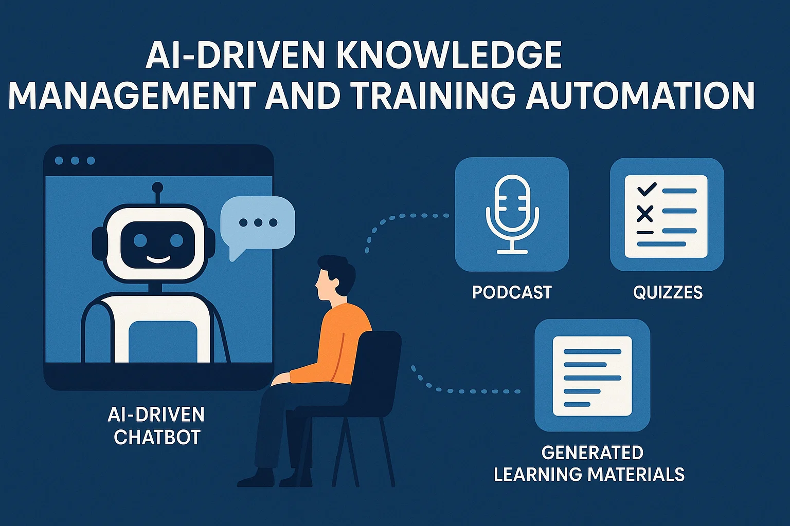
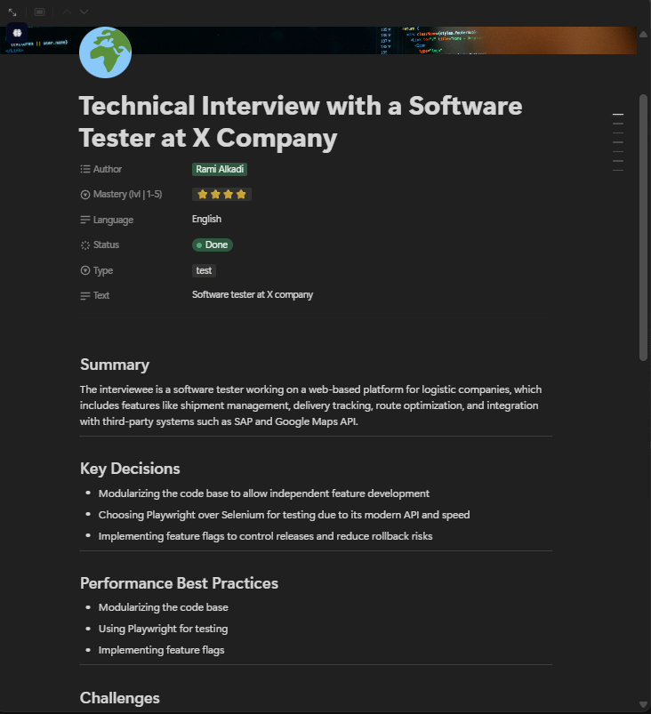
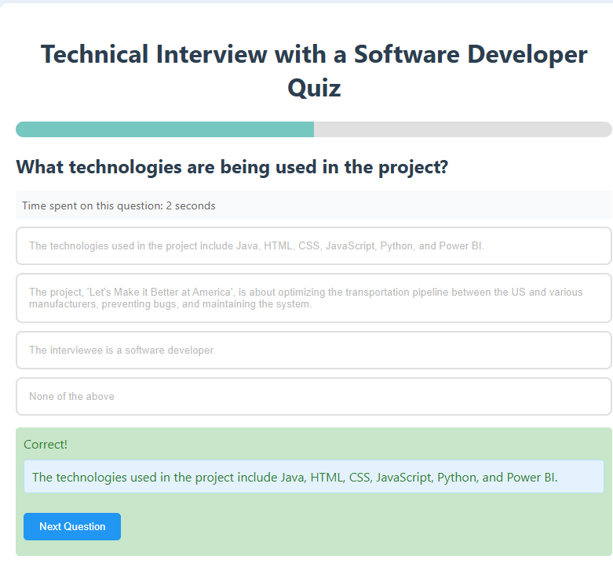

Generative AI Knowledge & Training Automation 
🤖 AI Interview Chatbot
I built a GPT‑powered interview assistant that conducts expert interviews, captures answers in real time via Azure Speech‑to‑Text, and responds contextually to guide the conversation. Each turn is timestamped and persisted for downstream generation.
challenge
TrueLime faced a knowledge retention and onboarding challenge . Critical expertise was locked inside senior developers’ heads, while new joiners often struggled to ramp up quickly. Traditional documentation was time‑consuming to create, quickly outdated, and not engaging enough to ensure adoption.
Solution
I developed a GenAI Interview Chatbot that captures expert knowledge through conversational interviews and instantly transforms it into structured, engaging, and multimodal training content . By automating the flow from capture → structure → generation, I drastically reduced the time needed to convert expert input into usable learning resources.
🧩 Generative AI Pipeline
1) Capture
Record audio, diarize speakers, and persist raw + cleaned transcripts with timestamps and metadata.
Azure STT/TTS
WAV/JSON
2) Structure
Prompt‑engineered GPT converts answers into structured JSON: overview, FAQs, key decisions, glossary, tech stack.
OpenAI GPT‑4
Prompt Engineering
3) Generate
Create Notion pages, MCQ quizzes, podcast audio and training video scripts, then render avatar videos.
Notion API
Vue/JS Quiz
D‑ID
🎛️ Outputs

Structured Summary (Notion) – for full notion summary click
here

Interactive Quiz
Merged Podcast
Training Video (Avatar)
🔐 Trust, Privacy & Governance
Frameworks
ALTAI – trustworthy AI checklist & human oversight.FAIR – findable, accessible, interoperable, reusable assets.GDPR – consent, minimization, secure storage, retention policy.DEDA – data ethics mapping, access control, anonymization.
ALTAI
FAIR
GDPR
DEDA
Risks & mitigations
Model hallucinations ⇒ human validation & versioned summaries.STT transcription errors ⇒ post-interview review & corrections.Data leakage ⇒ encrypted SharePoint, role-based access, limited retention.
Human-in-the-loop
Versioning
Encryption
RBAC
Retention policy
📚 Libraries & Techniques
Python
OpenAI GPT‑3.5 / GPT‑4
Azure Speech (STT/TTS)
Notion API
Vue / JavaScript (Quizzes)
D‑ID (Training videos)
SharePoint